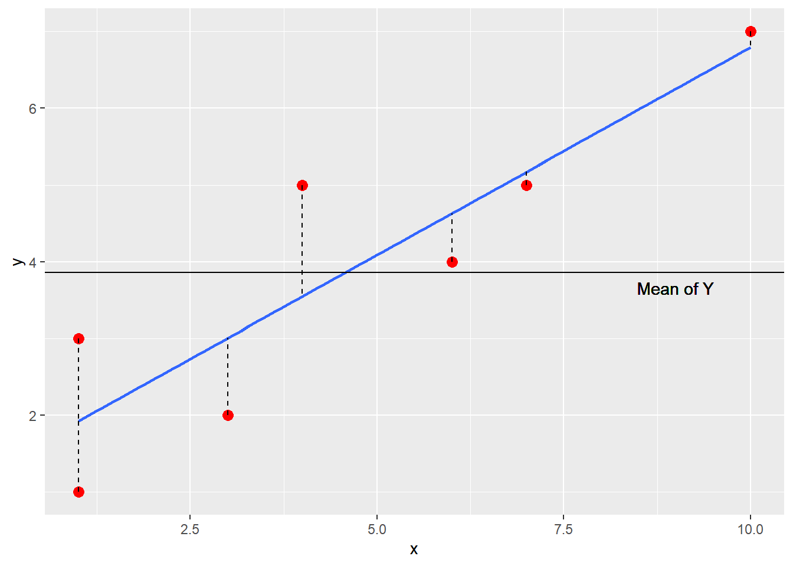
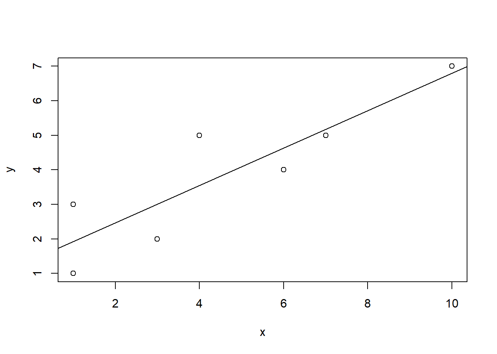
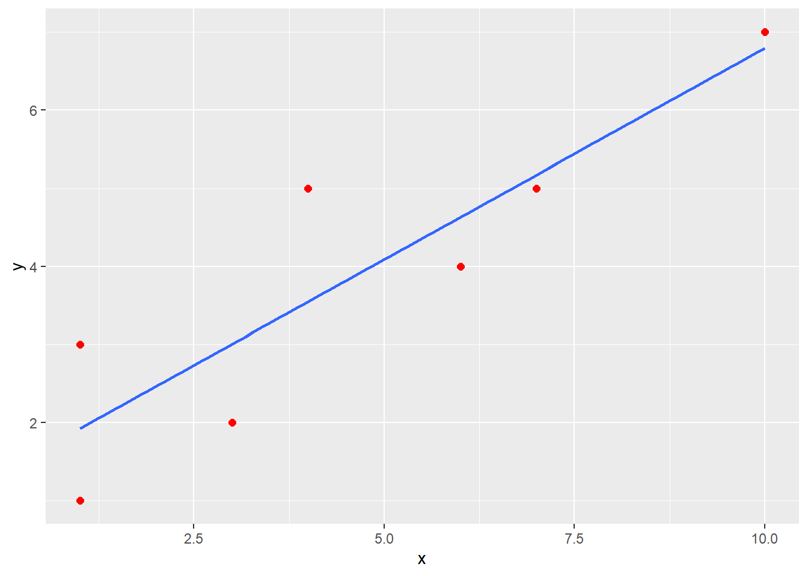
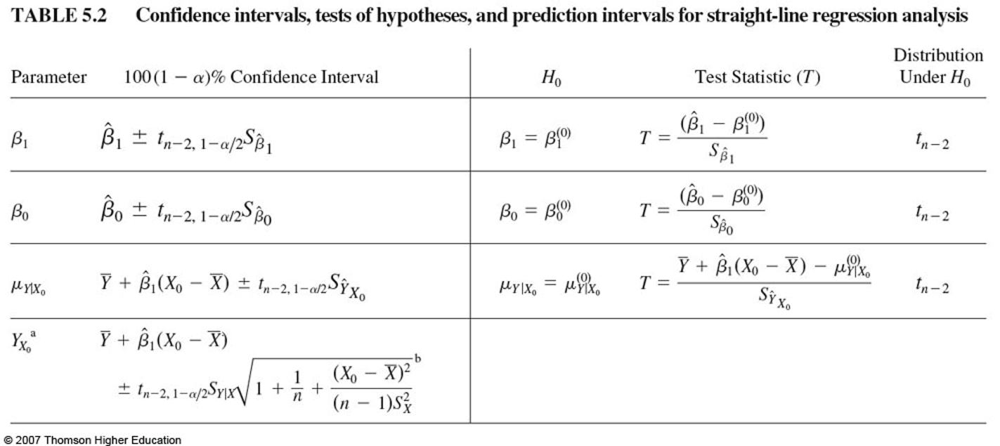
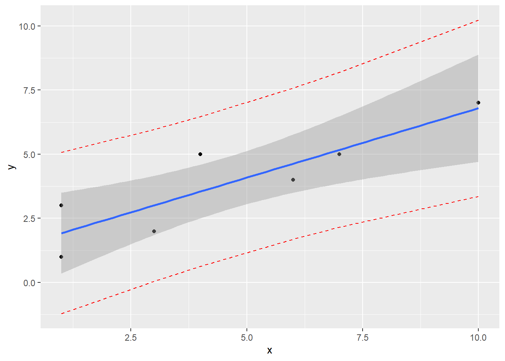
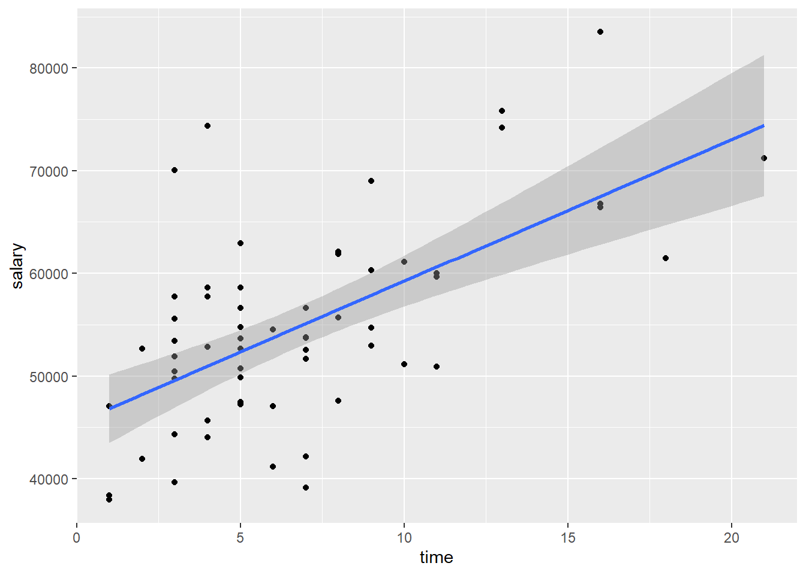

Chapter 4 Simple Linear Regression
library(rio); library(psych); library(Hmisc); library(ggplot2); library(QuantPsyc)Regression is one of the most flexible, most powerful, and most frequently used methods for modeling data, both in standard data analysis, and in advanced data science. Make sure you know how to do it. Use it as a baseline for comparing your models.
The simplest functional relationship between two variables X and Y can be expressed by the linear model (population): \({{Y}_{i}}=\alpha +\beta {{X}_{i}}+{{\varepsilon }_{i}}\), where
\({{Y}_{i}}\)= the score for person i on the dependent variable Y;
\(\alpha\) = the Y-intercept and is equal to the Y value when the value of X = 0 (where the line intersects the Y-axis);
\(\beta\) = the slope of the line and indicates the change in Y as the X value increases (or decreases) by 1 point (the steepness of the line) (Also called a regression coefficient);
\({{X}_{i}}\) = the value of the independent variable X for person i;
\({{\varepsilon }_{i}}\) = random error for person i.
For a sample: \(Y=a+bX+e\), where
a is an estimate of \(\alpha\); b is an estimate of \(\beta\); and e is an estimate of \({{\varepsilon }_{i}}\).
Y cannot be perfectly predicted from X. Other sources of variability will not be measured (represented by e).
Because e is unobservable or is unable to be measured, we rewrite the equation to indicate that we are unable to measure all sources of error: \(\hat Y = a + bX\), where \({\hat Y}\) is the predicted Y value determined from a knowledge of X values.
Prediction Error (called Residuals) is represented as the difference between observed Y values and the predicted Y values: \(e = Y - \hat Y\)
Ultimately, we want to find a solution for a and b that will minimize error as much as possible so that we can explain as much of Y as possible. Anything unexplained by X is leftover error (again, represented by e).
Ordinary Least Squares Regression minimizes the sum of squared residuals ( \(SS_{res}\) ): \(\sum{{{(Y-{\hat Y})}^{2}}=\sum{{{e}^{2}}}}\)
The linear regression equation, \({\hat Y}=a+bX\), will produce a line that will fit the data most accurately in the sense that it will minimize the residual sum of squares ( \(SS_{res}\) ) (Ordinary Least Squares).
Intercept: \(a=\bar{Y}-b\bar{X}\)
Slope: \(b=\frac{\sum{xy}}{\sum{{{x}^{2}}}}=\frac{\sum{(X-\bar{X})(Y-\bar{Y})}}{\sum{{{(X-\bar{X})}^{2}}}}\)
| \(X\) | \(Y\) | \(X-\bar X\) | \(Y-\bar Y\) | \((X - \bar X)^2\) | \((Y - \bar Y)^2\) | \((X - \bar X)(Y - \bar Y)\) | |
|---|---|---|---|---|---|---|---|
| 1 | 1 | -3.57 | -2.86 | 12.74 | 8.18 | 10.21 | |
| 1 | 3 | -3.57 | -0.86 | 12.74 | 0.74 | 3.07 | |
| 3 | 2 | -1.57 | -1.86 | 2.46 | 3.46 | 2.92 | |
| 4 | 5 | -0.57 | 1.14 | 0.32 | 1.30 | -0.65 | |
| 6 | 4 | 1.43 | 0.14 | 2.04 | 0.02 | 0.20 | |
| 7 | 5 | 2.43 | 1.14 | 5.90 | 1.30 | 2.77 | |
| 10 | 7 | 5.43 | 3.14 | 29.48 | 9.86 | 17.05 | |
| \(\Sigma\) | 32 | 27 | 0.01 | -0.02 | 65.68 | 24.86 | 35.57 |
\(\bar X = 4.57\), \(\bar Y = 3.86\), \(s_x = 3.31\), \(s_y = 2.03\)
Calculate slope: \(b=\frac{\sum{xy}}{\sum{{{x}^{2}}}}=\frac{\sum{(X-\bar{X})(Y-\bar{Y})}}{\sum{{{(X-\bar{X})}^{2}}}}=\frac{35.57}{65.68}=.54\)
Calculate intercept: \(a=\bar{Y}-b\bar{X}=3.85-(.54)(4.57)=3.85-2.47=1.38\)

Our linear regression equation: \({\hat Y}=1.38+.54X\). This equation can be used to predict Y using X for other samples.
What if we wanted to predict Y for a certain value of X (e.g., X = 8)? Just plug in the value 8 for X in the equation: \({\hat Y}=1.38+.54X=1.38+(.54)(8)=1.38+4.32=5.7\)
4.1 Plot the Data
4.1.1 Using plot()
x <- c(1, 1, 3, 4, 6, 7, 10)
y <- c(1, 3, 2, 5, 4, 5, 7)plot(x,y)
abline(lm(y ~ x))
4.1.2 Using ggplot()
df <- data.frame(x,y)
ggplot(data = df, mapping = aes(x = x, y = y)) +
geom_point(color = "red", size = 2) +
geom_smooth(method = "lm", se = FALSE) ## `geom_smooth()` using formula 'y ~ x'
4.2 The Regression Equation
Note that the intercept (a = 1.38) is where the line intersects the Y axis on the scatterplot. Also, look at the slope value (b = .54) which indicates that as X increases by 1 point, Y increases about a half of a point.
Recall that \({\hat Y}=a+bX\) and that \(a=\bar{Y}-b\bar{X}\).
\[{\hat Y}=(\bar{Y}-b\bar{X})+bX=\bar{Y}+b(X-\bar{X})=\bar{Y}+bx\]
\[b=\frac{\sum{xy}}{\sum{{{x}^{2}}}}=\frac{\sum{(X-\bar{X})(Y-\bar{Y})}}{\sum{{{(X-\bar{X})}^{2}}}}\]
Thus, if X does not affect Y or covary with Y, b = 0 and the predicted Y value will be equal to the mean of Y: \({\hat Y}=\bar{Y}+bx=\bar{Y}+(0)(x)=\bar{Y}\). Without any useful information, the mean will be the best predicted value.
Plugging in each person’s X value into our regression equation will yield predicted Y scores for every person: \({\hat Y}=1.38+.54X\)
| \(X\) | \(Y\) | \(\hat Y\) | |
|---|---|---|---|
| 1 | 1 | 1.92 | |
| 1 | 3 | 1.92 | |
| 3 | 2 | 3.00 | |
| 4 | 5 | 3.54 | |
| 6 | 4 | 4.62 | |
| 7 | 5 | 5.16 | |
| 10 | 7 | 6.78 | |
| \(\Sigma\) | 32 | 27 | 26.94 |
4.2.1 Variance explained
How much of the variance in Y is due to X and how much is due to error?
\(\sum{{{y}^{2}}=\sum{{{({\hat Y}-\bar{Y})}^{2}}+\sum{{{(Y-{\hat Y})}^{2}}}}}\) which can be expressed as \(\sum{{{y}^{2}}=S{{S}_{reg}}+S{{S}_{res}}}\) where the deviation sum of squares of the dependent variable Y ( \(S{S_{total}}\) ) is a function of two components: sum of squares due to regression ( \(S{{S}_{reg}}\) ) and sum of squares due to error ( \(S{S_{res}}\) ): \(S{{S}_{total}}=S{{S}_{reg}}+S{{S}_{res}}\).
Dividing by the total sum of squares, we can determine the proportion of variance due to the regression of Y on X and the proportion of variance due to error.
\(\frac{\sum{{{y}^{2}}}}{\sum{{{y}^{2}}}}=\frac{S{{S}_{reg}}}{\sum{{{y}^{2}}}}+\frac{S{{S}_{res}}}{\sum{{{y}^{2}}}}\) OR \(\frac{S{{S}_{total}}}{S{{S}_{total}}}=\frac{S{{S}_{reg}}}{S{{S}_{total}}}+\frac{S{{S}_{res}}}{S{{S}_{total}}}\)
Different notations in textbook: \(SS_T\) is the total sum of squares; \(SS_M\) is the model sum of squares (i.e., sum of squares due to the regression model), \(SS_R\) is the residual sum of squares.
| \(X\) | \(Y\) | \(\hat Y\) | \(\hat Y-\bar Y\) | \((\hat Y-\bar Y)^2\) | \(Y - \hat Y\) | \((Y - \hat Y)^2\) | \((Y - \bar Y)^2\) | |
|---|---|---|---|---|---|---|---|---|
| 1 | 1 | 1.92 | -1.94 | 3.75 | -0.92 | 0.85 | 8.16 | |
| 1 | 3 | 1.92 | -1.94 | 3.75 | 1.08 | 1.17 | 0.73 | |
| 3 | 2 | 3.00 | -0.86 | 0.73 | -1.00 | 1.00 | 3.45 | |
| 4 | 5 | 3.54 | -0.32 | 0.10 | 1.46 | 2.13 | 1.31 | |
| 6 | 4 | 4.62 | 0.76 | 0.58 | -0.62 | 0.38 | 0.02 | |
| 7 | 5 | 5.16 | 1.30 | 1.70 | -0.16 | 0.03 | 1.31 | |
| 10 | 7 | 6.78 | 2.92 | 8.54 | 0.22 | 0.05 | 9.88 | |
| \(\Sigma\) | 32 | 27 | 26.94 | -0.08 | 19.15 | 0.06 | 5.61 | 24.86 |
\(\bar X = 4.57\), \(\bar Y = 3.86\)
\(\sum y^2 = \sum {(\hat Y - \bar Y)^2} + \sum {(Y - \hat Y)^2} = SS_{reg} + SS_{res} = 19.15 + 5.61 = 24.76\)
\({{\sum y^2} \over {\sum y^2}} = {SS_{reg} \over {\sum y^2 }} + {SS_{res} \over {\sum y^2}}\) OR
\({SS_{total} \over {SS_{total}}} = {{SS_{reg}} \over {SS_{total}}} + {{SS_{res}} \over {SS_{total}}} = {{19.15} \over {24.76}} + {{5.61} \over {24.76}} = .77 + .23\)
About 77% of the variance in Y is due to X whereas about 23% of the variance is due to error.
4.2.2 Relationship with Pearson correlation
| \(X\) | \(Y\) | \(X-\bar X\) | \(Y-\bar Y\) | \((X - \bar X)^2\) | \((Y - \bar Y)^2\) | \((X - \bar X)(Y - \bar Y)\) | |
|---|---|---|---|---|---|---|---|
| 1 | 1 | -3.57 | -2.86 | 12.74 | 8.18 | 10.21 | |
| 1 | 3 | -3.57 | -0.86 | 12.74 | 0.74 | 3.07 | |
| 3 | 2 | -1.57 | -1.86 | 2.46 | 3.46 | 2.92 | |
| 4 | 5 | -0.57 | 1.14 | 0.32 | 1.30 | -0.65 | |
| 6 | 4 | 1.43 | 0.14 | 2.04 | 0.02 | 0.20 | |
| 7 | 5 | 2.43 | 1.14 | 5.90 | 1.30 | 2.77 | |
| 10 | 7 | 5.43 | 3.14 | 29.48 | 9.86 | 17.05 | |
| \(\Sigma\) | 32 | 27 | 0.01 | -0.02 | 65.68 | 24.86 | 35.57 |
\[{{r}_{xy}}=\frac{\sum{(X-\bar{X})(Y-\bar{Y})/(N-1)}}{{{s}_{x}}{{s}_{y}}}=\frac{35.57/(7-1)}{(3.31)(2.03)}=\frac{5.93}{6.72}=.88\] \(r_{xy}^{2}={{.88}^{2}}=.77\) which represents the proportion of variance in Y accounted for by X. Recall that this is the same value as dividing \(S{{S}_{reg}}\) by \(S{{S}_{total}}\): \(\frac{S{{S}_{reg}}}{S{{S}_{total}}}=\frac{19.15}{24.86}=.77\).
4.2.3 Coefficient of Determination (\({{R}^{2}}\))
The Squared multiple correlation, or R Square ( \({{R}^{2}}\) ), is interpreted as the proportion of variance in the outcome variable Y that can be explained by the predictor variable X. The adjusted R Square is an adjustment to better reflect the fit of the model in the population.
\[{{R}^{2}}=1-\frac{S{{S}_{res}}}{S{{S}_{total}}}\] where \(S{{S}_{res}}\) = \(\sum{{{(Y-{\hat Y})}^{2}}=\sum{{{e}^{2}}}}\) and \(S{{S}_{total}}\) = \(\sum{{{(Y-\bar{Y})}^{2}}}\).
\[R_{adj}^{2}={{R}^{2}}-\frac{(1-{{R}^{2}})k}{n-k-1}\] where n = sample size and k = the number of independent variables included in the model.
\({{R}^{2}}\) is the correlation between observed and predicted/fitted values squared.
In simple linear regression, \({{R}^{2}}\) is the square of the correlation between the predictor and outcome variables.
4.2.4 R Syntax
Use the lm() function to run the regression model.
x <- c(1, 1, 3, 4, 6, 7, 10)
y <- c(1, 3, 2, 5, 4, 5, 7)
model <- lm(y ~ x)
coef(model)## (Intercept) x
## 1.3826087 0.5413043To get the predicted values: \({\hat Y}=1.38+.54X\).
To get the residuals: \(e = Y - {\hat Y}\)
y.pred <- fitted(model)
y.res <- resid(model)
cbind(x, y, y.pred, y.res)## x y y.pred y.res
## 1 1 1 1.923913 -0.9239130
## 2 1 3 1.923913 1.0760870
## 3 3 2 3.006522 -1.0065217
## 4 4 5 3.547826 1.4521739
## 5 6 4 4.630435 -0.6304348
## 6 7 5 5.171739 -0.1717391
## 7 10 7 6.795652 0.2043478Coefficient of Determination (\({{R}^{2}}\))
summary(model)##
## Call:
## lm(formula = y ~ x)
##
## Residuals:
## 1 2 3 4 5 6 7
## -0.9239 1.0761 -1.0065 1.4522 -0.6304 -0.1717 0.2043
##
## Coefficients:
## Estimate Std. Error t value Pr(>|t|)
## (Intercept) 1.3826 0.7186 1.924 0.11234
## x 0.5413 0.1306 4.146 0.00895 **
## ---
## Signif. codes: 0 '***' 0.001 '**' 0.01 '*' 0.05 '.' 0.1 ' ' 1
##
## Residual standard error: 1.059 on 5 degrees of freedom
## Multiple R-squared: 0.7746, Adjusted R-squared: 0.7296
## F-statistic: 17.19 on 1 and 5 DF, p-value: 0.008949SS_total <- sum((y-mean(y))^2)
SS_reg <- sum((fitted(model)-mean(y))^2)
SS_res <- sum((y - fitted(model))^2)
SS_reg/SS_total## [1] 0.77462521 - SS_res/SS_total## [1] 0.7746252\({{R}^{2}}\) is the correlation between observed and predicted/fitted values squared
cor(y, fitted(model))^2## [1] 0.7746252In simple linear regression, \({{R}^{2}}\) is the square of the correlation between the predictor and outcome variables.
cor(x, y)## [1] 0.8801279cor(x, y)^2## [1] 0.77462524.3 Test of Significance and Confidence Interval
Formula for the Slope (Regression Coefficient): \(b=\frac{\sum{xy}}{\sum{{{x}^{2}}}}=\frac{\sum{(X-\bar{X})(Y-\bar{Y})}}{\sum{{{(X-\bar{X})}^{2}}}}\)
Alternate Formula for the Slope (Regression Coefficient): \(b=r\frac{{{s}_{y}}}{{{s}_{x}}}\), where r is the correlation coefficient between the independent and dependent variable, \({s_y}\) is the standard deviation of the dependent variable, and \({s_x}\) is the standard deviation of the independent variable.
- Standardized Regression Coefficients: Unstandardized regression coefficients we have been discussing are calculated using the raw scores of our variables (X and Y) in which they are still in their units of measurement (e.g., time in years, money in dollars). If we had standardized X and Y scores, in which the raw score units of X and Y were changed into z scores, the regression coefficients we would calculate would no longer be unstandardized, but would be called standardized regression coefficients. They are called standardized because they are the slopes of an equation using standardized scores (i.e., z scores). When using standardized scores, our regression equation would then be: \(z_{\hat y}=\beta {{z}_{x}}\), where \(z_{\hat y}\) is the predicted standardized score of Y, \(\beta\) is the standardized regression coefficient, and \({{z}_{x}}\) is the standardized score of X. You may notice that the intercept is no longer in the regression equation when using standardized scores. The intercept is equal to the value of zero in this case. This is due to the fact that the mean of z scores is equal to a value of zero. Recall the formula for the intercept: \(a=\bar{Y}-b\bar{X}\)= 0 – b(0) = 0.
Formula for the standardized regression coefficient: \(\beta =\frac{\sum{{{z}_{x}}{{z}_{y}}}}{\sum{z_{x}^{2}}}\), where the term in the numerator, \(\sum{{{z}_{x}}{{z}_{y}}}\), is the sum of cross products and the term in the denominator, \(\sum{z_{x}^{2}}\), is the sum of squared standardized scores.
Alternate formula for the standardized regression coefficient: \(\beta =b\frac{{{s}_{x}}}{{{s}_{y}}}\), where b is the unstandardized regression coefficient, sy is the standard deviation of the dependent variable Y, and sx is the standard deviation of the independent variable X.
In simple linear regression, the standardized regression coefficient is the correlation coefficient between X and Y:
\(\beta =b\frac{{{s}_{x}}}{{{s}_{y}}}=\frac{\sum{xy}\sqrt{\sum{{{x}^{2}}}}\sqrt{n-1}}{\sum{{{x}^{2}}}\sqrt{n-1}\sqrt{\sum{{{y}^{2}}}}}=\frac{\sum{xy}}{\sqrt{\sum{{{x}^{2}}}\sqrt{\sum{{{y}^{2}}}}}}={{r}_{xy}}\)
- In Simple Linear Regression, the standardized regression coefficient has fixed upper lower and upper limits of a correlation coefficient (i.e., ranges from -1 to +1). Unstandardized regression coefficients indicate the direction and by how many units Y will change with a 1 unit increase in X. They are expressed in their original scale of measurement of the independent variable (e.g., number of years). Recall that the mean of z scores is zero and the standard deviation is 1. Because the standard deviation of z scores is 1, a unit change in X indicates a change of one standard deviation. Thus, standardized regression coefficients indicate the direction and by how many standard deviations Y will change with 1 standard deviation increase in X.
4.3.1 Testing the regression of Y on X
- Recall that the total sum of squares \(\sum{{{(Y-\bar{Y})}^{2}}}\) is equal to the sum of the regression sum of squares \(\sum{{{({\hat Y}-\bar{Y})}^{2}}}\)and the residual sum of squares \(\sum{{{(Y-{\hat Y})}^{2}}}\):
\(S{{S}_{total}}=S{{S}_{reg}}+S{{S}_{res}}\). These sums of squares represent the variation of Y around its respective mean (Total), the variation of each predicted Y around the mean of Y (Regression), and the variation of each observed Y around its respective predicted Y value (Residual).
- Dividing these sums of squares by their respective degrees of freedom (df) makes these statistics larger and more accurate estimates of the variability they represent in the population. The resulting value is referred to as the Mean Square or MS because it represents the mean of a particular sum of squares, which will be an unbiased estimate of the population variance.
df for the Total Sum of Squares: n – 1
df for the Regression Sum of Squares: k (number of independent variables)
df for the Residual Sum of Squares: n – k – 1
\(M{{S}_{reg}}=\frac{\sum{{{({\hat Y}-\bar{Y})}^{2}}}}{k}=\frac{S{{S}_{reg}}}{d{{f}_{reg}}}\) \(M{{S}_{res}}=\frac{\sum{{{(Y-{\hat Y})}^{2}}}}{n-k-1}=\frac{S{{S}_{res}}}{d{{f}_{res}}}\)
Using the \(M{{S}_{reg}}\) and \(M{{S}_{res}}\), we can calculate an F ratio to test the regression of Y on X.
\(F=\frac{MS_{reg}}{MS_{res}}\) with \(df_{reg}\) in the numerator and \(df_{res}\) in the denominator. If the F ratio exceeds the critical value with ( \(df_{reg}\), \(df_{res}\) ) at alpha = .05, we reject the null that the regression of Y on X is equal to zero. That is, we are testing whether R Square is significantly different from zero:
\(F=\frac{{{R}^{2}}/k}{(1-{{R}^{2}})/(n-k-1)}\tilde{\ }df=k\ \text{and}\ n-k-1\)
4.3.2 Testing the regression coefficient (slope) and the confidence interval
You can also test the significance of a regression coefficient (slope) b to see if it is significantly different from zero.
- Variance of Estimate: The variance of estimate indicates the variance of the scores about the regression line. It is the variance of the residuals.
\[s_{y.x}^{2}=\frac{\sum{{{(Y-{\hat Y})}^{2}}}}{n-k-1}=\frac{S{{S}_{res}}}{n-k-1}\]
Recall: \(M{{S}_{res}}=\frac{\sum{{{(Y-{\hat Y})}^{2}}}}{n-k-1}=\frac{S{{S}_{res}}}{d{{f}_{res}}}\)
- Standard Error of Estimate: The standard error of estimate is the square root of the variance of estimate or the standard deviation of the residuals.
\[{{s}_{y.x}}=\sqrt{\frac{\sum{{{(Y-{\hat Y})}^{2}}}}{n-k-1}}=\sqrt{\frac{S{{S}_{res}}}{n-k-1}}\]
- When testing whether the slope or regression coefficient is significantly different from zero, the standard error associated with the slope b must be calculated:
\({{s}_{b}}=\sqrt{\frac{s_{y.x}^{2}}{\sum{{{x}^{2}}}}}=\frac{{{s}_{y.x}}}{\sqrt{\sum{{{x}^{2}}}}}\) where sb is the standard error of b, \(s_{y.x}^{2}\) is the variance of estimate, \(s_{y.x}^{{}}\) is the standard error of estimate, and \(\sum\limits_{{}}{{{x}^{2}}}\)is the sum of squares for the independent variable X
\({s}_{b}\) is the standard deviation of the sampling distribution of b and is used when testing the significance of the b using the t ratio: \(t=\frac{b}{{{s}_{b}}}=\frac{b-0}{{{s}_{b}}}\) with df of n – k – 1.
\(t=\frac{b}{{{s}_{b}}}=\frac{b-0}{{{s}_{b}}}\).
Note the special relationship between the F ratio and the t ratio when using only 1 independent variable: The F ratio is equal to the squared value of the t ratio (\({{t}^{2}}=F\)).
With knowledge of the standard error of b, we can create a confidence interval around the regression coefficient: \(b\pm {{t}_{(\alpha /2,df)}}{{s}_{b}}\).
4.3.3 R Syntax
Use summary() and confint() for statistical inference
# summary(model)
confint(model, level = 0.95) # for all parameters## 2.5 % 97.5 %
## (Intercept) -0.4645905 3.2298079
## x 0.2056480 0.8769607confint(model, "x", level = 0.95) # for specific parameters## 2.5 % 97.5 %
## x 0.205648 0.8769607Get standardized regression coefficients
- Method 1
lm(scale(y) ~ scale(x))##
## Call:
## lm(formula = scale(y) ~ scale(x))
##
## Coefficients:
## (Intercept) scale(x)
## 2.417e-16 8.801e-01- Method 2: use the
lm.beta()function from theQuantPsycpackage
model <- lm(y ~ x)
lm.beta(model)## x
## 0.88012794.4 Summary of Important Statistics
- R Square
- Adjusted R Square
- F Statistic to Test the Regression Model
- Regression Coefficients (Slopes)
- Standard Error of the Regression Coefficient
- T Statistic to Test Individual Slope Values
- Confidence Interval for the Slope (b)
- Standardized Regression Coefficient
4.5 Confidence Intervals, Hypothesis Testing, and Prediction Intervals

4.5.1 Prediction Intervals for New Observations
- Prediction Interval for the Mean (also called Confidence Bands)
- Confidence interval around the mean predictions
- Prediction Interval for the Individual (also called Prediction Bands)
- It gives uncertainty around a single value
- Prediction bands will be wider than the confidence bands
4.5.2 R Syntax
Prediction Intervals
new.xs <- data.frame(
x = c(2, 5, 8)
)
predict(model, newdata = new.xs, interval = "confidence") # Prediction interval for the mean## fit lwr upr
## 1 2.465217 1.122592 3.807843
## 2 4.089130 3.050686 5.127575
## 3 5.713043 4.169650 7.256437predict(model, newdata = new.xs, interval = "prediction") # Prediction interval for the individual## fit lwr upr
## 1 2.465217 -0.568980 5.499415
## 2 4.089130 1.176730 7.001531
## 3 5.713043 2.584821 8.841266Create a scatterplot with regression line, confidence band, and prediction band
model <- lm(y ~ x)
pred.int <- predict(model, interval = "prediction")## Warning in predict.lm(model, interval = "prediction"): predictions on current data refer to _future_ responsesmydata <- data.frame(x, y, pred.int)
ggplot(mydata, aes(x, y)) +
geom_point() +
stat_smooth(method = lm) +
geom_line(aes(y = lwr), color = "red", linetype = "dashed") +
geom_line(aes(y = upr), color = "red", linetype = "dashed")## `geom_smooth()` using formula 'y ~ x'
4.6 A Complete Example
mydata <- import("data/profs.sav")
#View(mydata)
corr.test(mydata$salary, mydata$time)
mymodel <- lm(salary ~ time, data = mydata)
summary(mymodel)
confint(mymodel, level = 0.95)
lm.beta(mymodel)
mydata$y.pred <- fitted(mymodel)
mydata$y.res <- resid(mymodel)
head(mydata)
ggplot(mydata, aes(x = time, y = salary)) +
geom_point() +
stat_smooth(method = lm)## `geom_smooth()` using formula 'y ~ x'
new.obs <- data.frame(
time = 12
)
predict(mymodel, newdata = new.obs, interval = "confidence") # Prediction interval for the mean
predict(mymodel, newdata = new.obs, interval = "prediction") # Prediction interval for the individualSum up: A correlational analysis indicated that a moderate, positive, and statistically significant relationship exists between time since earning a Ph.D. and professors’ current salary r(60) = .61, p < .001. A simple linear regression analysis was used to regress salary on time since earning a Ph.D. The regression model was statistifally significant, F(1, 60) = 35.17, p < .001. As indicated by the correlational analysis, time since earning a Ph.D. was a significant predictor of professors’ current salary, t(60) = 5.93, p < .001, accounting for approximately 36% of the variance ( \(R_{adj}^{2} = .359\)). The analysis indicated that as time since earning a Ph.D. increases by 1 year, professors’ salary is estimated to increase by about $1379 (95% CI: $914, $1845). As the number of years since earning a Ph.D. increases by 1 standard deviation, professors’ salary is estimate to increase by 0.61 standard deviations.
For professors 12 years post Ph.D., it is predicted that their salary would be about $62001 (95% CI: $58875, $65127). For any professor 12 years post Ph.D., the predicted salary is about $62001 (95% CI: $46146, $77856).